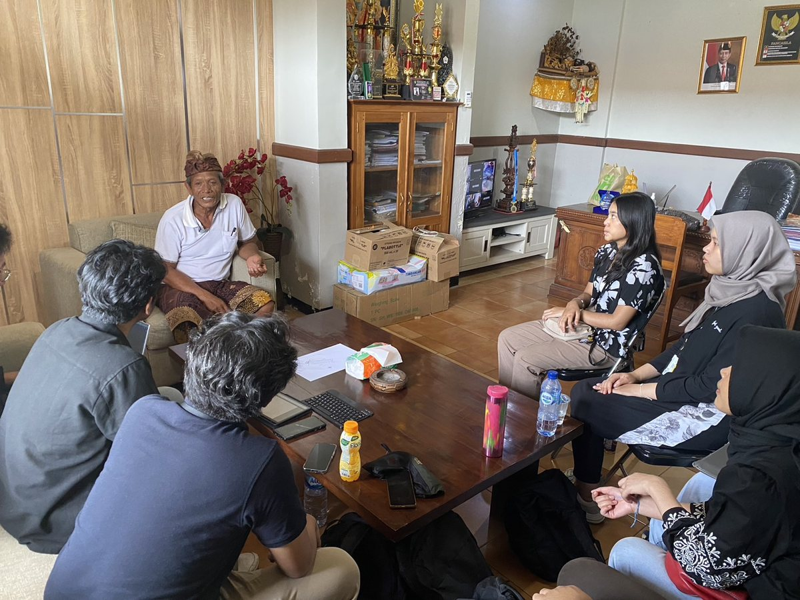

Before you read: take a guess
In what share of 69 farm households does the farmer want a child to take over, and the child want to as well?
Executive summary
Most farm households in Bengkel and Beraban have no successor. In a January 2024 survey of 69 households in Tabanan, 67 percent of farmers wanted a child to continue the farm, but only 33 percent of households had a child who wanted to. Both conditions held in 22 households, or 32 percent, and farmers in the two villages already average 57 to 58 years of age.
Children's experience matters more in these data than the farm's income. Succession reaches 52 percent where a child helps on the farm and 23 percent where none does. In the probit model, a child's schooling and the number of children lower the likelihood of succession, as does having only daughters. Land size and annual profit show no significant effect.
An interview with the head of the Beraban subak, the local irrigation association, explains much of this pattern. Three to five hectares of wet rice land are converted to housing each year, input costs eat into rice margins, and tourism offers young people work away from sun and mud.
But the sample is small and was reached by convenience, with 15 regressors on 67 observations in the full model. The results point to associations worth testing on a larger scale and do not establish cause.
Three surveys, three provinces
PENSAR field sites from 2023 to 2025. Each stop opens that year's report.


How the study works
 Two rice villages are chosenBengkel and Beraban, Kediri sub-district, Tabanan
Two rice villages are chosenBengkel and Beraban, Kediri sub-district, Tabanan Farm households are surveyed38 enumerators and 69 households
Farm households are surveyed38 enumerators and 69 households A subak head is interviewedTrends, obstacles, and local responses
A subak head is interviewedTrends, obstacles, and local responses Succession is modelledProbit on farmer, child, and farm traits
Succession is modelledProbit on farmer, child, and farm traits
The question
Bali's farm sector is ageing while tourism draws its young people away. The primary sector made up 15.17 percent of provincial GDP in 2020 and employed 22.51 percent of workers. Those shares give farming a weight that a tourism-centred view of the island can overlook, and the provincial government treats farmer regeneration as a priority.
Succession needs agreement between two generations, which is why the study defines it strictly. A household counts as having a successor only if the farmer wants a child to take over and the child wants to as well. Research elsewhere links succession to education, land ownership, and farm income, but little of it comes from Bali, where tourism sets the opportunity cost of farming.
The study asks which characteristics of the farmer, the child, and the farm are associated with succession in Tabanan, and what local actors see as the main obstacles.
Data and method
The survey took place in Kediri, the sub-district with the largest rice output in Tabanan. Bengkel contributed 32 respondents and Beraban 37, in proportion to the number of farmers in each. Enumerators worked in pairs and interviewed farmers who met the criteria and were easiest to reach, which makes this a convenience sample.
Succession is a binary outcome, so the choice lay between probit and logit, and the probit model had the lower AIC and BIC. The model adds farmer traits, child traits, and farm traits in turn before combining them. An in-depth interview with the head of the Beraban subak then covered trends in succession, the reasons behind them, and local efforts to keep farming viable.
The average farmer in the sample has 9.46 years of schooling, about the level of junior secondary school, manages 66 are of land, or two-thirds of a hectare, and earns an annual profit of IDR 34.63 million, although the standard deviation of profit is almost as large as the mean. Tools are not the obstacle. Some 96 percent use modern technology, mainly tractors, and 81 percent received extension services in the past year.
Findings
The gap lies between generations. Two-thirds of farmers want the farm to stay in the family, but only one-third of households have a child who agrees, so almost every household with a willing child also has a willing parent. Bengkel does better than Beraban, at 38 percent against 27 percent.
Parents want a successor twice as often as children want the farm
Share of 69 farm households, percent.
Households with a successor, by village
| Group | Share, percent |
|---|---|
| Farmer wants a successor | 67 |
| Child wants to continue | 33 |
| Both (22 of 69) | 32 |
| Bengkel | 38 |
| Beraban | 27 |
PENSAR 2024 survey of 69 households. The report gives the combined rate as 31.88 percent.
Time on the farm counts
Children who help on the farm are far more likely to stay. Succession is 29 percentage points higher among households where a child helps, and the coefficient of 1.477 is significant at the 5 percent level in the full model. Early exposure may build both skill and the wish to continue. Or children who already plan to farm may simply be the ones who help.
Other child traits matter as well. Older children are more likely to take over, while each additional child lowers the likelihood, possibly because heirs compete. More schooling also lowers it, which fits a higher opportunity cost in an island economy with a large tourism sector. Households with only daughters are less likely to have a successor than households with only sons, in line with studies that link succession to gender norms in farming.
| Probit, full model | Coefficient |
|---|---|
| Child helps on the farm | 1.477** (0.592) |
| Number of children | −2.322** (0.933) |
| Age of children | 0.0674** (0.0300) |
| Schooling of children | −0.282*** (0.0951) |
| All daughters (vs all sons) | −4.142*** (1.362) |
| Farmer schooling | 0.127* (0.0659) |
| Tenant (vs owner) | −1.501* (0.910) |
| Land size | 0.00824 (0.00575) |
| Annual profit (log) | −0.102 (0.223) |
| Modern technology | −3.357** (1.598) |
| Extension services | 1.458** (0.668) |
Standard errors in parentheses. *** p < 0.01, ** p < 0.05, * p < 0.1. 67 observations, pseudo R² 0.457. Crop diversification is left out because the report's table and text disagree on its sign.
Farm income does not explain it
Neither land size nor annual profit is significant, which departs from much of the earlier literature, and the interview offers one reason: young people weigh working conditions as well as pay, and tourism jobs spare them the sun and mud of the rice field. Modern technology has a negative coefficient of −3.357, which the report links to the cost of running machines. Tractor diesel needs a letter from the village head and a barcode, with a limit of 30 litres a day.
From the field
The head of the Beraban subak described a sector that is under pressure from several sides. Farmland is sold as foreign and tourism demand raises its price, and a blocked channel can leave fields downstream without water. Harvest labour now comes mostly from Java, at IDR 300,000 to 350,000 a day, because nearly everyone local works in tourism.


The pandemic showed how thin the attachment to farming has become. Farming held up while tourism collapsed, and many tourism workers turned to the land on the promise that they would stay, but when tourism recovered they went back, and much of the land they had taken on now lies idle. The subak head's own two sons have declined to take over, and new entrants are mostly retirees.
"Farmers in general are never well off."Head of the Beraban subak. Translated from Indonesian.
Policy implications
- Raise the return to farming. The report calls for direct incentives for farmers, together with investment in irrigation, water access, and storage, which would lower operating costs.
- Train farmers and their children together. Education programmes on modern technology, crop choice, and sustainable practice would build the skills that make farming a more attractive career. The result on helping suggests starting young.
- Link farming to the sectors that are growing. Rice-field tours were planned in Beraban before the pandemic. Support for such ventures could draw young people back and raise public regard for farming.
- Build demand for local produce. The subak head reported that consumers resist paying a price at which farmers can make a living, so awareness of local produce is part of the answer.
Limitations
The study rests on 69 households in two villages, reached by convenience sampling, so the results do not represent Bali. The full model estimates many coefficients on 67 observations, which makes large values such as those for number of children and all daughters unstable. Succession is measured by stated wishes and not by actual transfers of land. One interview, in one village, carries much of the explanation.
My role
I was a member of the research team for PENSAR 2024, the yearly field study of Kanopi FEB UI. The research division prepared the study, and 38 enumerators carried out the survey over two days in Bengkel and Beraban. The report is team work, and this page is my own summary of it.
How to cite
Research Division, Kanopi FEB UI. (2024). Seeds of Change: Understanding the Factors Affecting Succession in Balinese Farming Communities. Penelitian Besar 2024. Faculty of Economics and Business, Universitas Indonesia.
Download the report (PDF, 32 pages, 26 MB, in Indonesian)